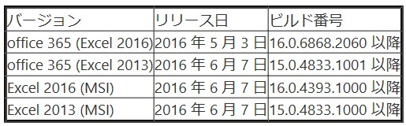

こんにちは、Office サポートの佐村です。
本記事では LAA (LARGE ADDRESS AWARE) に対応した Excel 2013 / 2016 についてご案内いたします。
オペレーションシステム (OS) が 64 bit で、かつ大容量のメモリを搭載していても、
利用するアプリケーションが 32 bit の場合は、そのアプリケーションが利用できるメモリ (ユーザーモードの仮想アドレス空間) は 2 GB が限界となります。
※実際には、アプリケーション本体や各 DLL が利用する領域が差し引かれ、実際に利用できるメモリ容量は 2 GB より小さくなります。
さらに、大量のデータを処理する場合は連続したメモリの空き容量が必要なため、メモリエラーが発生することがあります。
「メモリ不足です。完全に表示できません。」
「リソース不足のため、このタスクを完了することができません。選択するデータを少なくするか、ほかのアプリケーションを終了して再度試してください。」
この問題に対応するため、Excel 2013 / Excel 2016 では LAA に対応しました。
特定のバージョン以降の Excel 2013 / 2016 を利用いただくことで、32 bit 版の Excel でも メモリを 4 GB まで利用可能になります。
※アプリケーション本体、DLL の領域は以前のバージョンと同様に差し引かれるため、実際に利用できるメモリ容量は 4 GB 弱となります。
[LAA をサポートする Excel のバージョン]

64bit 版の Windows OS 上で、上記の Excel のバージョン以降では自動的に LAA が有効になるので、レジストリやオプションの設定等は不要です。
なお、LAA が有効になった場合は、以下のサイトの「使用可能メモリに依存」に影響し、Excel の仕様や制限を超えることはできません。
例 : LAA が有効になっても Excel の行は最大 1,048,576 行であることには変更ありません。
タイトル : Excel の仕様と制限
URL : https://support.office.com/ja-jp/article/-ca36e2dc-1f09-4620-b726-67c00b05040f
- 参考情報
タイトル : Large Address Aware capability change for Excel
URL : https://support.microsoft.com/en-us/kb/3160741
https://support.microsoft.com/ja-jp/kb/3160741 (日本語機械翻訳)
タイトル : Memory usage in the 32-bit edition of Excel 2013 and 2016
URL : https://support.microsoft.com/en-us/kb/3066990
https://support.microsoft.com/ja-jp/kb/3066990 (日本語機械翻訳)
タイトル : How to troubleshoot “available resources” errors in Excel
URL : https://support.microsoft.com/en-us/kb/2779852
- 注意事項
本情報の内容（添付文書、リンク先などを含む）は、作成日時点でのものであり、予告なく変更される場合があります。